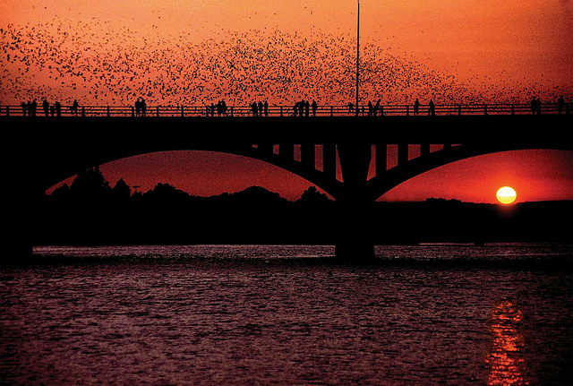

Exploring Austin
Views
Congress Bridge

Ann W. Richards Congress Avenue Bridge is home to the world's largest urban bat colony, which is composed of Mexican free-tailed bats. They come out from under the bridge at dusk to feed themselves, attracting as many as 10,000 tourists annually.